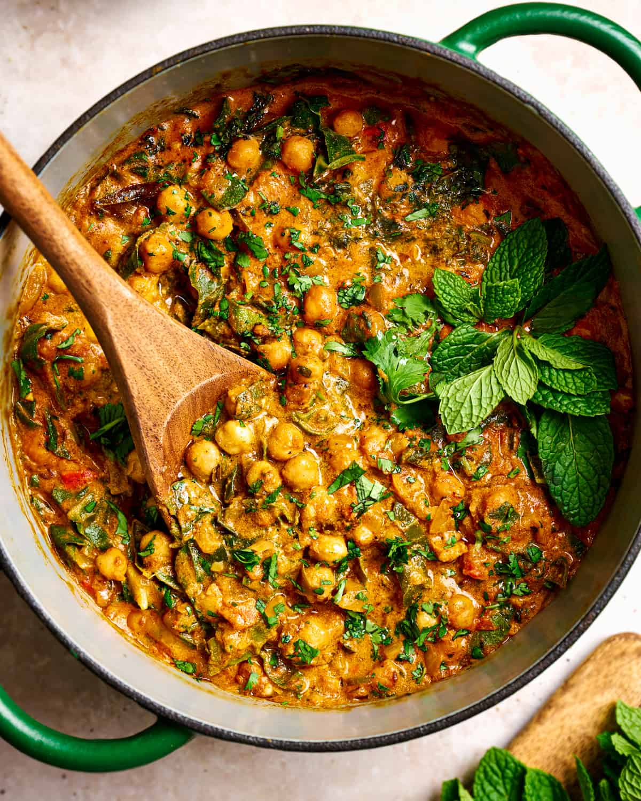

Chickpea Curry

Description
A delicious vegan combination of chickpeas, greens, and spices
Ingredients
- 2 tbs avocado oil
- 2 tsp coriander seeds
- 1 tsp cumin seeds
- 15 to 20 fresh curry leaves
- 1 large yellow onion, diced
- 6 garlic cloves, minced
- 2-inch fresh ginger, minced
- 1 to 3 serrano peppers, diced
- 2 tbs tomato paste
- 2 roma tomatoes, diced
- 2 tsp salt
- 1 can full fat coconut milk
- 1/2 cup water
- 2 cans chickpeas, drained and rinsed
- 3 tbs tahini
- 1/2 tsp sugar, brown or cane
- 1 small head of swiss chard or lacinato kale
- 2 tsp garam masala
- 1 tbs freshly squeezed lemon juice
- 1 handful cilantro leaves
- 1 handful mint leaves
Spices
- 1 1/2 tsp curry powder
- 1 tsp ground coriander
- 1/2 tsp ground cinnamon
- 1/2 tsp freshly grated nutmeg
- 1/4 tsp ground tumeric
- black pepper to taste
Steps
- Heat oil in dutch oven over medium-high heat. Once hot add cumin and coriander seeds for about 1 minute, then add curry leaves. If adding fresh curry leaves immediately cover after adding. Cook for 20 seconds.
- Add onions with salt and cook for 5 minutes, use water as needed to keep onions from browning. Then add garlic, ginger, and serrano peppers and cook for 1 to 2 minutes, stirring frequently.
- Add ground spices and tomato paste and stir frequently for 90 seconds, using water as needed to prevent drying out.
- Add tomatoes and 2 tsp salt, cook for 5 minutes
- Pour in chickpeas, coconut milk, water, tahini, and sugar. Stir well and bring to a simmer then cover for 15 to 20 minutes, stirring occasionally.
- While simmering, rinse swiss chard, cilantro, and mint. Slice chard thinly and chop cilantro and mint.
- After simmering, add greens and continue simmering until tender and wilted, 4 to 5 minutes.
- Stir in garam masala and lemon juice then allow 5 to 15 minutes for flavors to meld.